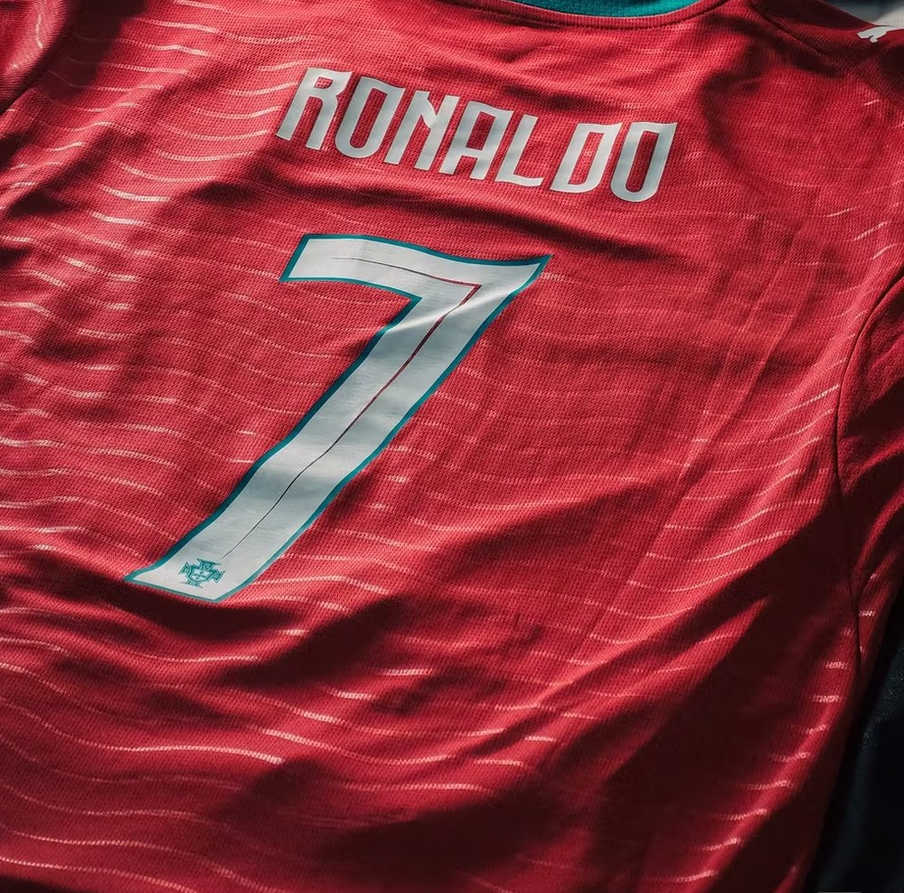

2004
19 岁，第一次让整个国家站起来
欧洲杯揭幕战对希腊，第 93 分钟他头球砸进国家队大赛首球。虽然那场输了，虽然决赛又输给同一个对手，但从那一刻起，葡萄牙知道自己有一个可以在任何时候改变比分的人。
GREECE 2 — 1 PORTUGAL
去 B 站看现场 ↗
“是时候交还国家队 7 号球衣了。”
2026.11.05全部为男子足球国家队世界纪录。数字是冷的，但每一个数字背后都是一次跑动。
金色是登顶，绿色是遗憾。两条线都属于他。
一个 19 岁，一个 33 岁，一个 41 岁。同一件球衣。
欧洲杯揭幕战对希腊，第 93 分钟他头球砸进国家队大赛首球。虽然那场输了，虽然决赛又输给同一个对手，但从那一刻起，葡萄牙知道自己有一个可以在任何时候改变比分的人。
3-3 西班牙。他一个人打进三球，最后一球是距离球门 25 米的任意球，皮球从人墙右侧起飞，下坠，贴着立柱内侧进网。那届世界杯官方用一个词形容这场比赛：Ronaldo。
对乌兹别克斯坦梅开二度。六届世界杯，六届都进球，前无古人。两个月后他在达拉斯哭完，三个月后交还了球衣。

23 年，234 场，146 球，三座奖杯，一座没有拿到的。